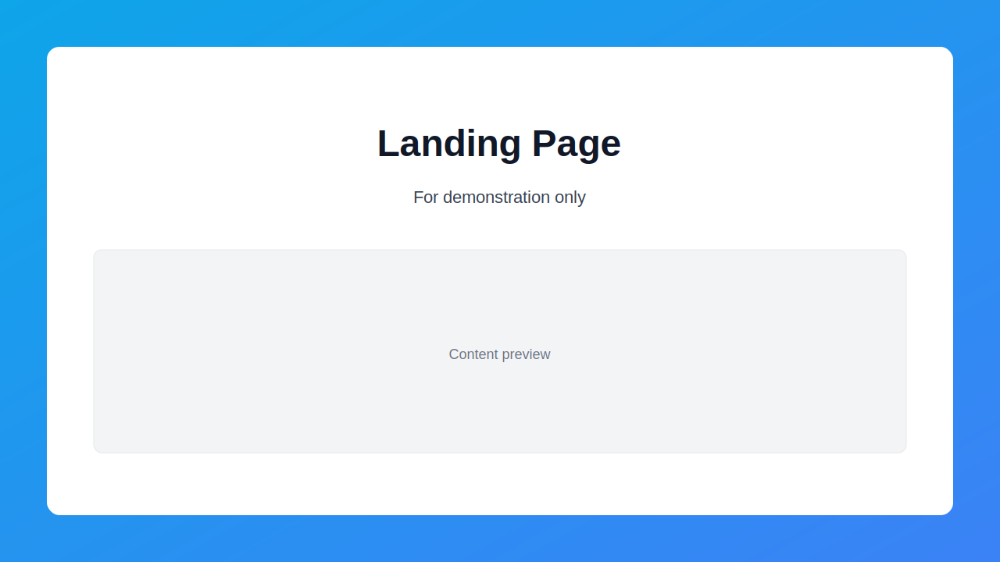
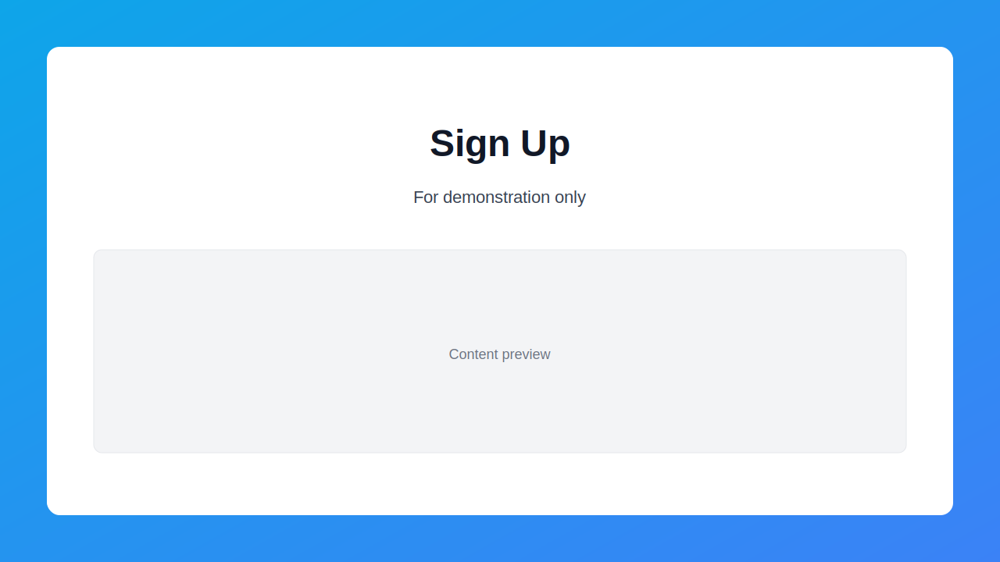
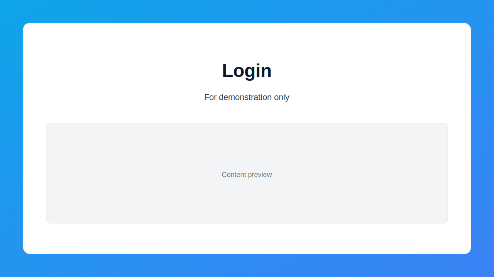
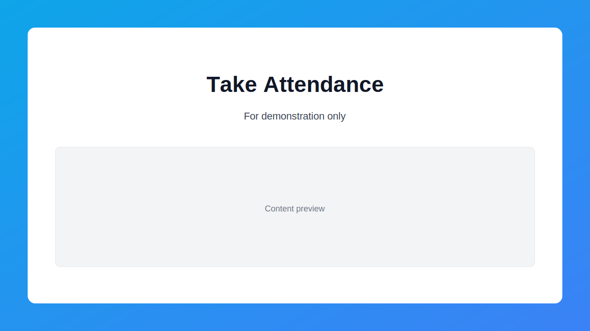
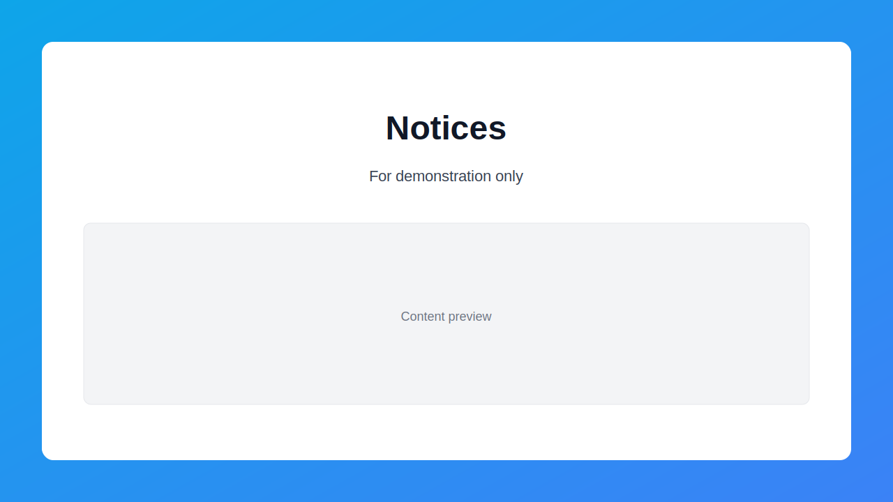

SchoolSphere — Client User Guide
Welcome to SchoolSphere! This friendly guide explains how to use every major feature, in the natural order a customer experiences the product: from signing up, to daily tasks, to signing out. It’s written for non‑technical users.
Tip: If you ever get stuck, look for a Save, Submit, or Continue button on the screen, or use the Back button in your browser.
1) Getting Started

Supported devices and browsers
- Desktop or laptop with a modern browser (Chrome, Edge, Safari, Firefox)
- Recent Android/iOS devices using Chrome/Safari
- Guests can start right away (with limited access) and later activate practice exams with a code.
- Other roles may require an Admin to approve your account (see “Account Approval” below).
- Quick view of classes, attendance shortcuts, recent activity, and upcoming items
- Personal snapshot: recent attendance, notices, and key links
- Sidebar (left): main sections—Students, Teachers, Exams, Attendance, Communications, Payments, Resources, Settings, and more
- Top bar: page title, optional search, profile menu (for Sign Out)
- You’ll only see the sections allowed for your role (see RBAC section near the end).
- Go to Students to see the list
- Use search and filters to find specific students
- Click Delete on the student you wish to remove
- View student details, grades, attendance history, and related records
- Go to Teachers; search and filter as needed
- Click Create or Edit to maintain teacher records
- Save your changes
- See teacher details, assigned classes, and related information
- Teachers see classes they teach
- Admins manage classes via student and teacher records
- Classes are used throughout exams, attendance, and video meetings
- Links to Take Attendance, Historical Attendance, and Attendance Reports
- Review past attendance records
- Filter by date, class, or student
- See personal attendance history
- Aggregated analytics (e.g., averages, trends)
- Choose exam type (e.g., JAMB)
- Select subjects (the system guides you with rules—for JAMB, English is required)
- Start a practice session
- Practice sessions present a curated set of questions and a timer
- Admin/Teacher can upload questions and manage internal exams
- Assigned to Me: shows exams assigned to a student/teacher
- Preview an exam: view title, subject, duration, and approximate question count
- Start an exam to begin an attempt
- Timer and navigation appear at the top
- Select answers; autosave keeps progress
- Submit when done
- See total questions, correct answers, and your score
- Where allowed, review per‑question correctness
- Guests need an activation code to unlock standardized practice exams
- Admins can generate codes
- Go to Admin → Activation Codes
- Click Generate, choose how many and what type
- See the list of codes and statuses
- Overview of users’ subscription status
- Update a user’s subscription (e.g., set to Active or Expired)
- View messages and filter by type (Personal, Announcement, Notification)
- Compose a new message, select recipients, write your subject and content, then Send
- See a list of threads
- Open a thread to read and reply
- Create or edit your posts (permissions vary by role)
- Start a new conversation (choose one or more users)
- Send messages in real time
- Conversation list shows name and last message
- Click Join to open the meeting room
- Owners can End the meeting; participants can Leave anytime
- Students/Parents: view your payment items and statuses
- Admin: create, update, and manage payment records
- Browse and download resources
- Admin/Teacher can upload and manage learning materials
- Notices: school announcements and updates
- Activities: recent actions and events across the system
- Maintain the subject list used across exams and reports
- Students/Parents: view personal progress (grades, exam results, attendance trends)
- Teachers/Admin: broader views to support coaching and oversight
- View system notifications and alerts
- Update your first/last name, email, phone, and address
- Update school info (name, address, contacts, term, academic year)
- Email/SMS/Push toggles so you receive what matters to you
- Choose Light, Dark, or System theme
- Pick your primary color
- Two‑Factor Authentication (2FA): start setup and verify with your authenticator app
- Manage Sessions: see how many sessions you have active
- Change Password: enter current and new passwords
- Export Data: download your personal data
- Delete Account: permanently remove your account (irreversible)
- Admin can create new users directly with assigned roles
- Health card: quick counts across the system (for simple diagnostics)
- Account Approval Manager: review and approve new accounts
- Subscription Manager: manage access to standardized practice exams
- Admin: full control—manage people, exams, attendance, payments, and settings
- Teacher: manage classes, take attendance, prepare exams/resources, and communicate
- Student: practice and take assigned exams, view progress, read resources/notices, communicate
- Parent: view your child’s progress and attendance, read notices, communicate
- Guest: try practice exams (activation may be required)
- “Unauthorized” message: sign out and back in; if it persists, contact the school admin
- Missing a page or button: your role may not allow it; contact an admin if you need access
- Slow or offline: check your internet; many actions retry automatically when you reconnect
- Browser: if something looks off, update your browser or try another modern browser
- Can I reset my password? Yes—go to Settings → Security → Change Password.
- Can I change my role? Roles are assigned by an Admin.
- Can I practice JAMB/WAEC/NECO as a guest? Yes, after activation (enter your activation code on the Activate page).
- Where are my exams? Go to Exams → Assigned to Me (for internal) or use Practice Hub for standardized exams.
Create your account (Sign Up)
 Click Sign Up from the top of the site. Enter your full name, email, and password. Choose your role: - Student - Teacher - Parent - Guest (for practice exams only) Click Sign Up.Notes:
Sign In (Login)
 Click Login. Enter your email and password. Click Sign In. You’ll land on your Dashboard—what you see depends on your role (Admin, Teacher, Student/Parent, or Guest).2) The Dashboard (Home)
The Dashboard is your home page after login. It shows quick stats and shortcuts most relevant to your role.
Admin Dashboard
<ul><li>Welcome header with your name</li><ul><li>Key Stats: Total Students, Active Teachers, Pending Payments, Average Attendance</li><ul><li>Weekly Attendance Chart</li><ul><li>Students Progress donut chart</li><ul><li>Event Calendar</li><ul><li>School Notices</li><ul><li>Recent Activity feed</li><ul><li>Management tools:</li></ul> - Subscription Manager (manage user access to practice exams) - Account Approval Manager (approve new user accounts)
- Account Approval Manager (approve new user accounts)Teacher Dashboard
Student/Parent Dashboard
3) Navigation
4) Students (Admin & Teacher)
View Students
Add or Edit a Student
Click Create (or Edit on a student) Fill in details (name, email, class, etc.) SaveDelete a Student (Admin/authorized roles)
Student Profile (Admin/Teacher; Student/Parent see their own)
5) Teachers (Admin)
View Teachers
Add/Update/Delete Teacher
Teacher Profile (Admin/Teacher)
6) Classes (Admin & Teacher)
7) Attendance
Attendance Hub (Admin/Teacher)
Take Attendance (Admin/Teacher)
 Choose a Class - If you’re a teacher with a single class, it’s selected automatically For each student, choose Present, Absent, Late, or Excused Click Submit to saveHistorical Attendance (Admin/Teacher)
My Attendance (Student/Parent)
Attendance Reports (Admin)
8) Exams
The Exams section includes two parts: Practice Hub (standardized exams like JAMB/WAEC/NECO) and Internal (School) Exams.
Practice Hub (JAMB/WAEC/NECO)
Internal (School) Exams
Taking an Exam
Exam Results
9) Subscriptions (Guests & Admin)
Guest Activation
Admin Activation Codes
Subscription Manager (Admin)
10) Messages (All roles)
11) Communications (Forum & Chat)
Forum
Chat
12) Video Conferencing
Create a Meeting (Admin/Teacher)
Go to Video Conferencing Click Create Meeting Enter a topic and optionally bind it to a class CreateJoin / End a Meeting
13) Payments
14) Resources
15) Notices & Activities
 16) Subjects (Admin)
17) Progress & Grades
18) Notifications
19) Settings
Profile Settings
School Settings (Admin)
Notification Preferences
Appearance
Security
20) Create User (Admin)
21) Admin Tools
22) Role‑Based Access (Plain English)
23) Tips & Troubleshooting
24) FAQ (Quick Answers)
25) Signing Out
Click your profile/menu in the top bar Choose Sign Out You’ll be returned to the Login pageThat’s it! If you need help, contact your school administrator or support representative. Enjoy using SchoolSphere!